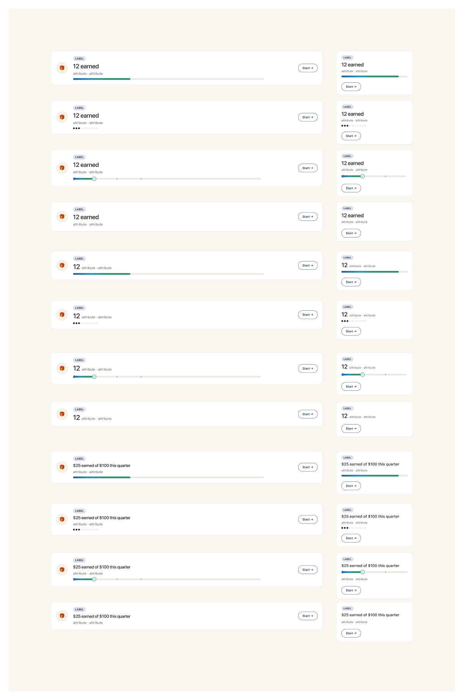

The full primitive library for the single-reward banner. Same shell (icon disc · label chip + hero number · attribute · optional progress · optional action). What changes per variant is which primitives are present and what's emphasized — balance vs earnable, with bar vs dots vs levels vs nothing. Both desktop and mobile forms shown.
View in FigmaTwelve cells in two columns — large form (1432-px desktop) on the left, small form (360-px mobile) on the right. Three hero formats × four progress / no-progress combinations.

The fragment shipping today uses the Points & levels balance + bar variant from this library:
<section class="section" aria-labelledby="rewards-title">
<div class="section-head">
<h2 id="rewards-title" class="heading-6">Your rewards</h2>
<a class="btn btn-text" href="/rewards">Reward Dashboard</a>
</div>
<div class="reward-banner">
<div class="banner-icon banner-icon--rewards">
<span class="fa-icon" aria-hidden="true"></span>
</div>
<div class="reward-banner__body">
<span class="tier-chip tier-chip--silver">Silver tier</span>
<div class="reward-banner__balance">
<span class="heading-5 reward-banner__hero">1,250</span>
<span class="body-3 ink-soft">points balance · 750 to Gold</span>
</div>
<div class="progress" aria-hidden="true">
<div class="progress__fill" style="--p:62%"></div>
</div>
</div>
<a class="btn btn-outlined" href="/rewards">Redeem</a>
</div>
</section>
.reward-banner .banner-icon { display: none }) to save horizontal width.var(--s-06) (32 px). Mobile padding: 20 px.var(--s-04) (16 px) between the tier chip, balance row, and progress bar..btn-outlined — no new button class needed.